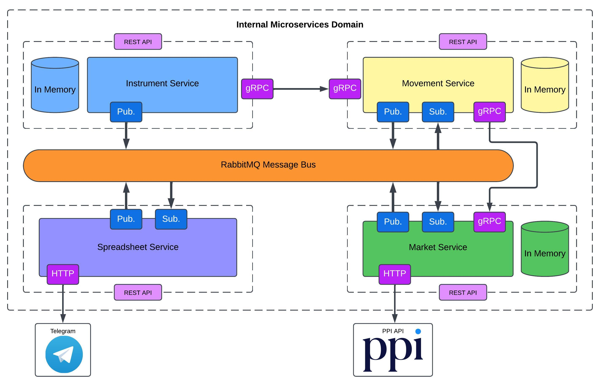

CEDEARs Tracker
This project was developed to practice microservices architecture and the migration process from a monolithic system to a microservices-based approach. This system consists of 4 microservices with specific responsibilities and independent databases.
1. Instrument Service
- Allows the creation of instruments that represent the different financial assets you want to track.
- Has a database that saves instruments.
- When an instrument is created, it sends this information to MovementService through the RabbitMQ Message Bus.
2. Movement Service
- Allows the creation of movements (buy/sell) for each instrument.
- Has a database that saves movements and instruments.
- At the start, it retrieves all the available instruments in Instrument Service.
- When a movement is registered, it calculates the average purchase price and sends it to MarketService through the RabbitMQ Message Bus.
3. Market Service
- Communicates with the PPI API to get the current price for each instrument.
- Has a database with the required information to generate the spreadsheet.
- At the start, it retrieves all the available information in Movement Service.
- When a movement is registered, receive the updated information for the specific instrument.
- Sends the necessary information to generate the spreadsheet through the RabbitMQ Message Bus.
4. Spreadsheet Service
- Sends the request to get the necessary information to generate the spreadsheet through RabbitMQ.
- Generates the spreadsheet and sends it via Telegram.
- Does not have any database.
Note: The project is called CEDEARS Tracker, but it can track any financial assets available through the PPI API.
The solution architecture is here: 